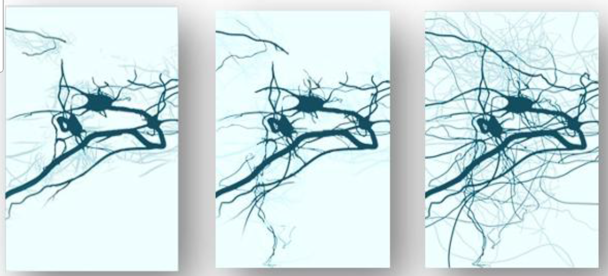
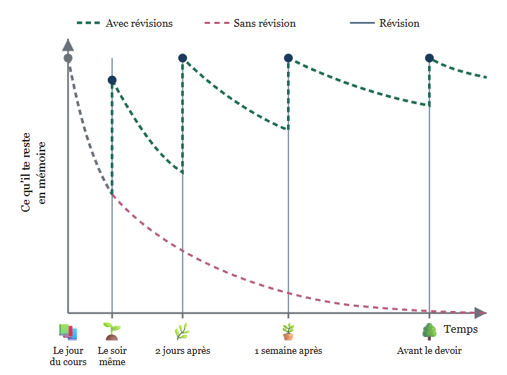
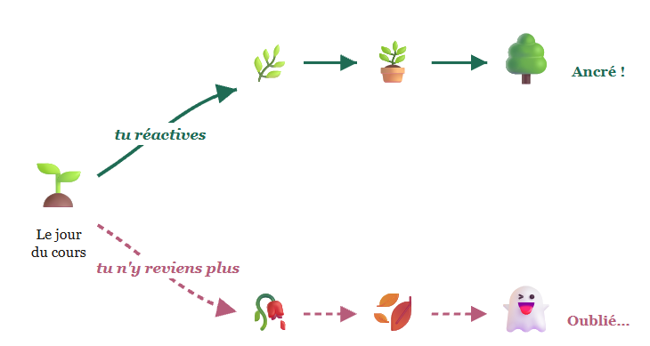

Ressources en accès libre — Z. Lechevalier
Vous trouverez ici les ressources que j'utilise avec mes classes : vidéos, quiz d'entraînement, activités et fiches de cours. Elles sont librement téléchargeables et réutilisables.
Chaque chapitre suit la même architecture, pensée pour une classe inversée et fondée sur les principes de la recherche en sciences cognitives. Le détail de la démarche est expliqué sur la page « Comment utiliser ces ressources ».
Les chapitres de Première spécialité seront mis en ligne progressivement.
Apprendre, c'est créer des connexions entre les neurones, puis les entretenir : une connaissance qui n'est jamais réactivée s'efface. C'est ce qui explique l'organisation de ces ressources — nombreuses, fractionnées, à reprendre intégralement à intervalles espacés — plutôt qu'un document unique qu'on lirait une fois.

Sans rien faire, on oublie très vite ce qu'on vient d'apprendre. Mais chaque réactivation fait remonter la courbe — et la redescente est un peu plus lente à chaque fois. Inutile de tout retenir du premier coup : il suffit de revenir au bon moment, un peu à chaque fois.

C'est aussi ce qui se passe avec une jeune plante : on l'arrose souvent au début, puis on espace. À chaque réactivation, le souvenir s'enracine un peu plus — et si l'on cesse d'arroser, la plante meurt.

Je dois l'essentiel de cette approche à Steve Masson, professeur à l'Université du Québec à Montréal, où il dirige le Laboratoire de recherche en neuroéducation. Son livre Activer ses neurones pour mieux apprendre et enseigner (Odile Jacob, 2020) expose sept principes issus de la recherche sur le cerveau, dont ceux qui structurent tout ce travail : activer les neurones à plusieurs reprises, à intervalles espacés, et s'entraîner à récupérer en mémoire plutôt qu'à relire.